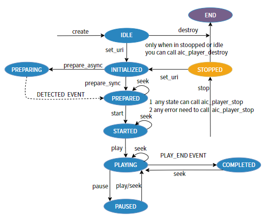

6.8.5. 设计说明¶
6.8.5.1. 源码说明¶
本模块源码位于 source/artinchip/aic-mpp/middle_media 下,目录结构如下
aic-mpp
|--middle-media
|-base
| |-inlcude
| | |-aic_message.h //定义公共消息接口
| | |-aic_parser.h //定义parser 接口
| | |-aic_stream.h //定义stream接口
| | |-aic_render.h //定义视频渲染接口
| | |-aic_audio_render.h //定义音频渲染接口
| |
| |-message //消息接口具体实现
| |-parser //parser接口具体实现
| |-stream //stream接口具体实现
| |-render //音视频渲染接口具体实现
|
|-audio_decoder //音频软件解码器，无硬件音频解码器。
|
|-openmax //播放器组件
| |-component
| | |-OMX_AdecComponent.c //音频解码组件,输入编码音频数据,输出解码后的pcm数据
| | |-OMX_AudioRenderComponent.c //音频渲染组件，将解码后音频送到音频设备播放
| | |-OMX_ClockComponent.c //时钟组件，为音视频同步服务
| | |-OMX_DemuxerComponent.c //解封装组件,识别文件的封装格式,从文件中解析出音视频packet
| | |-OMX_VdecComponent.c //视频解码组件，输入编码视频数据，输出解码后的视频图像
| | |-OMX_VideoRenderComponent.c //视频渲染组件，将解码后图像显示在屏幕上
| |
| |-inlcude
| |-*.h //openmax头文件
|
|-player
|-inlcude
| |-aic_player.h //palyer接口定义
|
|aic_player.c //player接口实现
6.8.5.2. 模块架构¶
player 在系统架构中的层次如下图
player 是中间件，向 App 提供 player 接口
player 视频解码调用 mpp_decoder
player 音频解码调用 audio_decoder
player 视频渲染操作 DE driver 提供的接口
player 音频渲染操作 Sound driver 提供的接口
player 内部实现解封装的功能
audio_decoder(音频解码器)
audio_decoder 是纯软件解码，目前移植了第三方的 libmad 和 faad ，支持 MP3 和 AAC 解码。
player 模块架构如下图,分为3层
第1层,player interface ,向上提供 player 接口,向下调用 OpenMAX 组件实现 player 功能。
第2层,OpenMAX Component,提供统一的组件操作接口。每个组件完成特定的功能,比如视频解码,视频渲染等。
第3层,Base，提供 parser，stream，message，render 接口和实现。
parser 提供解封装的功能，比如MP4封装
stream 提供解析流协议的功能，本地文件也看作是一种流协议，目前也只支持本地文件
message 为组件传递消息提供支持
render 提供底层音视频渲染的功能
目前支持 MP4 和 MP3 封装的本地文件，后续扩展其他流协议和封装格式，通过增加相应的 parser 和 stream 实现
6.8.5.3. player interface 的设计¶
这一层是对外提供的接口，用户只与这一层交互即可。
6.8.5.3.1. 状态机设计¶
player interface 基于状态机设计,状态转换如图

状态机说明:
- IDLE
闲置状态,刚创建完 player 处于此状态,此状态只能通过 aic_player_set_uri 转换为 INITIALIZED
- INITIALIZED
初始化完成状态,和 IDLE 状态相比,仅仅是多了媒体数据源的信息
- PREPARING
在 INITIALIZED 状态调用异步 aic_player_prepare_async 到达此状态,这一状态主要是打开媒体文件并解析它,解析成功之后,自动转换为 PREPARED 状态,通过事件 AIC_PLAYER_EVENT_DEMUXER_FORMAT_DETECTED 告知 app
- PREPARED
在 INITIALIZED 状态调用同步 aic_player_prepare_sync 到达此状态,这一状态主要是打开媒体文件并解析它,解析完成后转换到 PREPARED 状态
- STARTED
在 PREPARED 状态调用 aic_player_start 到达此状态,这一状态主要是根据解析出的文件创建音视频解码线程和音视频显示线程,可以随时进行播放了
- PLAYING
在 STARTED 或 PAUSED 状态调用 aic_player_play 到达此状态,开始播放媒体
- PAUSED
在 PLAYING 状态调用 aic_player_pause 到达此状态,暂停播放媒体
- COMPLETED
媒体播放完毕后,自动转换为 COMPLETED 状态,并以事件 AIC_PLAYER_EVENT_PLAY_END 告知app
- STOPPED
无论处于任何状态都可以调用 aic_player_stop 回到 STOPPED 状态。切换文件时，无论是否播放结束，要先调用 aic_player_stop 停止当前文件的播放。
- END
这里 END 表示释放掉播放器所有的资源，不是播放器的内部状态。
6.8.5.3.2. 数据结构设计¶
// 事件回调函数
typedef s32 (*event_handler)(void* app_data,s32 event,s32 data1,s32 data2);
// 事件
enum aic_player_event {
AIC_PLAYER_EVENT_PLAY_END = 0, // 文件播放结束
AIC_PLAYER_EVENT_PLAY_TIME, //播放时刻,pts = data1<<32|data2
AIC_PLAYER_EVENT_DEMUXER_FORMAT_DETECTED,//文件解析成功
AIC_PLAYER_EVENT_DEMUXER_FORMAT_NOT_DETECTED//文件解析失败
};
struct aic_video_stream {
s32 width;
s32 height;
};
struct aic_audio_stream {
s32 nb_channel;
s32 bits_per_sample;
s32 sample_rate;
};
// 媒体信息
struct av_media_info {
s64 file_size;
s64 duration;
u8 has_video;
u8 has_audio;
u8 seek_able;
struct aic_video_stream video_stream;
struct aic_audio_stream audio_stream;
};
6.8.5.3.3. 接口设计¶
struct aic_player *aic_player_create(char *uri);
s32 aic_player_destroy(struct aic_player *player);
s32 aic_player_set_uri(struct aic_player *player,char *uri);
// 异步解析媒体文件
s32 aic_player_prepare_async(struct aic_player *player);
// 同步解析媒体文件，媒体文件比较大时，解析文件比较耗时，程序会一直阻塞在这个函数中，所以提供了上面的异步接口，
// 异步接口中，创建一个线程去解析文件，所以异步接口会立刻返回，但是文件并没有解析完。无论解析成功还是失败，player
// 内部会通过事件回调函数 event_handler 通知 app。
s32 aic_player_prepare_sync(struct aic_player *player);
s32 aic_player_start(struct aic_player *player);
s32 aic_player_play(struct aic_player *player);
s32 aic_player_pause(struct aic_player *player);
s32 aic_player_stop(struct aic_player *player);
s32 aic_player_get_media_info(struct aic_player *player,struct av_media_info *media_info);
s32 aic_player_set_event_callback(struct aic_player *player,void* app_data,event_handler event_handle );
s32 aic_player_get_screen_size(struct aic_player *player,struct mpp_size *screen_size);
s32 aic_player_set_disp_rect(struct aic_player *player,struct mpp_rect *disp_rect);
s32 aic_player_get_disp_rect(struct aic_player *player,struct mpp_rect *disp_rect);
s32 aic_player_set_mute(struct aic_player *player);
s32 aic_player_set_volum(struct aic_player *player,s32 vol);
s32 aic_player_get_volum(struct aic_player *player,s32 *vol);
s64 aic_player_get_play_time(struct aic_player *player);
s32 aic_player_seek(struct aic_player *player, u64 seek_time);
//rotation_angle 可以取的值 MPP_ROTATION_0，MPP_ROTATION_90，MPP_ROTATION_180，MPP_ROTATION_270
s32 aic_player_set_rotation(struct aic_player *player, int rotation_angle);
s32 aic_player_get_rotation(struct aic_player *player);
6.8.5.3.3.1. aic_player_create¶
函数原型 |
struct aic_player *aic_player_create(char *uri) |
|---|---|
功能说明 |
创建 player 对象 |
参数定义 |
uri：媒体文件路径
|
返回值 |
palyer 对象 |
注意事项 |
6.8.5.3.3.2. aic_player_destroy¶
函数原型 |
s32 aic_player_destroy(struct aic_player *player) |
|---|---|
功能说明 |
销毁 player 对象 |
参数定义 |
player：player 对象
|
返回值 |
0：成功，其他：失败
|
注意事项 |
在 IDLE 和 STOPPED 状态起作用 |
6.8.5.3.3.3. aic_player_set_uri¶
函数原型 |
s32 aic_player_set_uri(struct aic_player *player,char *uri) |
|---|---|
功能说明 |
设置媒体文件路径 |
参数定义 |
player：player 对象，uri：媒体文件路径
|
返回值 |
0：成功，其他：失败
|
注意事项 |
在 IDLE 和 STOPPED 状态起作用 |
6.8.5.3.3.4. aic_player_prepare_async¶
函数原型 |
s32 aic_player_prepare_async(struct aic_player *player) |
|---|---|
功能说明 |
异步解析媒体文件 |
参数定义 |
player：player 对象 |
返回值 |
0：解析命令发送成功，其他：失败
|
注意事项 |
在 INITIALIZED 状态起作用 |
6.8.5.3.3.5. aic_player_prepare_sync¶
函数原型 |
s32 aic_player_prepare_sync(struct aic_player *player) |
|---|---|
功能说明 |
同步解析媒体文件 |
参数定义 |
player：player 对象 |
返回值 |
0：解析文件成功，其他：失败
|
注意事项 |
在 INITIALIZED 状态起作用 |
6.8.5.3.3.6. aic_player_start¶
函数原型 |
s32 aic_player_start(struct aic_player *player) |
|---|---|
功能说明 |
启动播放器，创建音视频解码线程和音视频渲染线程 |
参数定义 |
player：player 对象 |
返回值 |
0：成功，其他：失败
|
注意事项 |
在 PREPARED 状态起作用 |
6.8.5.3.3.7. aic_player_play¶
函数原型 |
s32 aic_player_play(struct aic_player *player) |
|---|---|
功能说明 |
播放媒体文件 |
参数定义 |
player：player 对象 |
返回值 |
0：成功，其他：失败
|
注意事项 |
在 STARETED 状态起作用 |
6.8.5.3.3.8. aic_player_pause¶
函数原型 |
s32 aic_player_pause(struct aic_player *player) |
|---|---|
功能说明 |
暂停播放媒体文件 |
参数定义 |
player：player 对象 |
返回值 |
0：成功，其他：失败
|
注意事项 |
在 PLAYING 和 PAUSED 状态起作用 |
6.8.5.3.3.9. aic_player_stop¶
函数原型 |
s32 aic_player_stop(struct aic_player *player) |
|---|---|
功能说明 |
停止播放，释放音视频解码线程和音视频显示线程 |
参数定义 |
player：player 对象 |
返回值 |
0：成功，其他：失败
|
注意事项 |
任意状态可以调用该函数来停止播放器。切换文件时一定要调用aic_player_stop。 |
6.8.5.3.3.10. aic_player_get_media_info¶
函数原型 |
s32 aic_player_get_media_info(struct aic_player *player, struct av_media_info *media_info) |
|---|---|
功能说明 |
获取媒体信息 |
参数定义 |
player：player 对象，media_info：媒体信息
|
返回值 |
0：成功，其他：失败
|
注意事项 |
在 PREPARED 和 COMPLETED 区间的状态起作用 |
6.8.5.3.3.11. aic_player_set_event_callback¶
函数原型 |
s32 aic_player_set_event_callback(struct aic_player *player, event_handler event_handle) |
|---|---|
功能说明 |
获取媒体信息 |
参数定义 |
player：player 对象，event_handle：监听事件函数
|
返回值 |
0：成功，其他：失败
|
注意事项 |
一定要注册，播放结束通过回调函数通知 |
6.8.5.3.3.12. aic_player_get_screen_size¶
函数原型 |
s32 aic_player_get_screen_size(struct aic_player *player, struct mpp_size *screen_size) |
|---|---|
功能说明 |
获取屏幕大小 |
参数定义 |
player：player 对象，screen_size：屏幕大小
|
返回值 |
0：成功，其他：失败
|
注意事项 |
在 STARETED 和 COMPLETED 区间的状态均起作用 |
6.8.5.3.3.13. aic_player_set_disp_rect¶
函数原型 |
s32 aic_player_set_disp_rect(struct aic_player *player, struct mpp_rect *disp_rect) |
|---|---|
功能说明 |
设置显示区域 |
参数定义 |
player：player 对象，disp_rect：显示区域
|
返回值 |
0：成功，其他：失败
|
注意事项 |
在 STARETED 和 COMPLETED 区间的状态起作用 |
6.8.5.3.3.14. aic_player_get_disp_rect¶
函数原型 |
s32 aic_player_get_disp_rect(struct aic_player *player, struct mpp_rect *disp_rect) |
|---|---|
功能说明 |
设置显示区域 |
参数定义 |
player：player 对象，disp_rect：显示区域
|
返回值 |
0：成功，其他：失败
|
注意事项 |
在 STARETED 和 COMPLETED 区间的状态起作用 |
6.8.5.3.3.15. aic_player_set_mute¶
函数原型 |
s32 aic_player_set_mute(struct aic_player *player) |
|---|---|
功能说明 |
静音切换 |
参数定义 |
player：player 对象
|
返回值 |
0：成功，其他：失败
|
注意事项 |
在 STARETED 和 COMPLETED 区间的状态起作用 |
6.8.5.3.3.16. aic_player_set_volum¶
函数原型 |
s32 aic_player_set_volum(struct aic_player *player,s32 vol) |
|---|---|
功能说明 |
设置音量 |
参数定义 |
player：player 对象，vol：音量
|
返回值 |
0：成功，其他：失败
|
注意事项 |
在 STARETED 和 COMPLETED 区间的状态起作用 |
6.8.5.3.3.17. aic_player_get_volum¶
函数原型 |
s32 aic_player_get_volum(struct aic_player *player,s32 *vol) |
|---|---|
功能说明 |
获取音量 |
参数定义 |
player：player 对象，vol：音量
|
返回值 |
0：成功，其他：失败
|
注意事项 |
在 STARETED 和 COMPLETED 区间的状态起作用 |
6.8.5.3.3.18. aic_player_get_play_time¶
函数原型 |
s64 aic_player_get_play_time(struct aic_player *player) |
|---|---|
功能说明 |
获取播放时间 |
参数定义 |
player：player 对象
|
返回值 |
>=0：播放时间，<0：获取播放时间的状态不对
|
注意事项 |
在 STARETED 和 COMPLETED 区间的状态起作用 |
6.8.5.3.3.19. aic_player_seek¶
函数原型 |
s32 aic_player_seek(struct aic_player *player, u64 seek_time) |
|---|---|
功能说明 |
跳转指定时间点 |
参数定义 |
player：player 对象，seek_time：跳转的时间点
|
返回值 |
0：成功，其他：失败
|
注意事项 |
在 IDLE/INITIALIZED/PREPARING 状态下设置不起作用 |
6.8.5.3.3.20. aic_player_set_rotation¶
函数原型 |
s32 aic_player_set_rotation(struct aic_player *player, int rotation_angle) |
|---|---|
功能说明 |
设置视频旋转角度 |
参数定义 |
player：player 对象，rotation_angle：旋转角度
rotation_angle 可取值 MPP_ROTATION_0，MPP_ROTATION_90，MPP_ROTATION_180，MPP_ROTATION_270
|
返回值 |
0：成功，其他：失败
|
注意事项 |
在 STARTED/PLAYING/PAUSED/COMPLETED 状态下设置起作用 |
6.8.5.3.3.21. aic_player_get_rotation¶
函数原型 |
s32 aic_player_get_rotation(struct aic_player *player) |
|---|---|
功能说明 |
获取视频旋转角度 |
参数定义 |
player：player 对象
|
返回值 |
>=0：旋转角度，<0：获取失败
|
注意事项 |
在 STARTED/PLAYING/PAUSED/COMPLETED 状态下可以获取 |
6.8.5.3.4. APP Demo¶
#include <string.h>
#include <malloc.h>
#include <stddef.h>
#include <stdlib.h>
#include <stdlib.h>
#include <stdio.h>
#include <fcntl.h>
#include <unistd.h>
#include <sys/types.h>
#include <signal.h>
#include <pthread.h>
#include <dirent.h>
#include <inttypes.h>
#include <getopt.h>
#include "mpp_dec_type.h"
#include "mpp_list.h"
#include "mpp_log.h"
#include "mpp_mem.h"
#include "aic_message.h"
#include "aic_player.h"
#include <rthw.h>
#include <rtthread.h>
#include <shell.h>
#ifdef LPKG_USING_CPU_USAGE
#include "cpu_usage.h"
#endif
#define PLAYER_DEMO_FILE_MAX_NUM 128
#define PLAYER_DEMO_FILE_PATH_MAX_LEN 256
#define BUFFER_LEN 16
static int g_player_end = 0;
static int g_demuxer_detected_flag = 0;
static int g_sync_flag = AIC_PLAYER_PREPARE_SYNC;
static struct av_media_info g_media_info;
struct file_list {
char *file_path[PLAYER_DEMO_FILE_MAX_NUM];
int file_num;
};
static void print_help(const char* prog)
{
printf("name: %s\n", prog);
printf("Compile time: %s\n", __TIME__);
printf("Usage: player_demo [options]:\n"
"\t-i input stream file name\n"
"\t-t directory of test files\n"
"\t-l loop time\n"
"\t-c save capture file path,default /sdcard/video/capture.jpg \n"
"\t-W capture widht\n"
"\t-H capture height\n"
"\t-q capture quality\n"
"\t-h help\n\n"
"Example1(test single file for 1 time): player_demo -i /mnt/video/test.mp4 \n"
"Example2(test single file for 3 times): player_demo -i /mnt/video/test.mp4 -l 3 \n"
"Example3(test some files for 1 time ) : player_demo -t /mnt/video \n"
"Example4(test some files for 3 times ): player_demo -t /mnt/video -l 3 \n"
"---------------------------------------------------------------------------------------\n"
"-------------------------------control key while playing-------------------------------\n"
"---------------------------------------------------------------------------------------\n"
"('d'): play next \n"
"('u'): play previous \n"
"('p'): pause/play \n"
"('+'): volum+5 \n"
"('-'): volum-5 \n"
"('f'): forward seek +8s \n"
"('b'): back seek -8s \n"
"('z'): seek to begin pos \n"
"('m': enter/eixt mute \n"
"('e'): eixt app \n"
}
static int read_dir(char* path, struct file_list *files)
{
char* ptr = NULL;
int file_path_len = 0;
struct dirent* dir_file;
DIR* dir = opendir(path);
if(dir == NULL) {
loge("read dir failed");
return -1;
}
while((dir_file = readdir(dir))) {
if(strcmp(dir_file->d_name, ".") == 0 || strcmp(dir_file->d_name, "..") == 0)
continue;
ptr = strrchr(dir_file->d_name, '.');
if(ptr == NULL)
continue;
if (strcmp(ptr, ".h264") && strcmp(ptr, ".264") && strcmp(ptr, ".mp4") )
continue;
logd("name: %s", dir_file->d_name);
file_path_len = 0;
file_path_len += strlen(path);
file_path_len += 1 ; // '/'
file_path_len += strlen(dir_file->d_name);
printf("file_path_len:%d\n",file_path_len);
if(file_path_len > PLAYER_DEMO_FILE_PATH_MAX_LEN-1){
loge("%s too long \n",dir_file->d_name);
continue ;
}
files->file_path[files->file_num] = (char *)mpp_alloc(file_path_len+1);
files->file_path[files->file_num][file_path_len] = '\0';
strcpy(files->file_path[files->file_num], path);
strcat(files->file_path[files->file_num], "/");
strcat(files->file_path[files->file_num], dir_file->d_name);
logd("i: %d, filename: %s", files->file_num, files->file_path[files->file_num]);
files->file_num ++;
if(files->file_num >= PLAYER_DEMO_FILE_MAX_NUM)
break;
}
return 0;
}
s32 event_handle( void* app_data,s32 event,s32 data1,s32 data2)
{
int ret = 0;
switch(event){
case AIC_PLAYER_EVENT_PLAY_END:
g_player_end = 1;
logd("g_player_end\n");
break;
case AIC_PLAYER_EVENT_PLAY_TIME:
break;
case AIC_PLAYER_EVENT_DEMUXER_FORMAT_DETECTED:
if(AIC_PLAYER_PREPARE_ASYNC == g_sync_flag){
g_demuxer_detected_flag = 1;
logd("AIC_PLAYER_EVENT_DEMUXER_FORMAT_DETECTED\n");
}
break;
case AIC_PLAYER_EVENT_DEMUXER_FORMAT_NOT_DETECTED:
if(AIC_PLAYER_PREPARE_ASYNC == g_sync_flag){
logd("AIC_PLAYER_EVENT_DEMUXER_FORMAT_NOT_DETECTED\n");
logd("cur file format not detected,play next file!!!!!!\n");
g_player_end = 1;
}
break;
default:
break;
}
return ret;
}
static int set_volume(struct aic_player *player,int volume)
{
if(volume < 0){
volume = 0;
}
else if(volume < 101){
}
else{
volume = 100;
}
logd("volume:%d\n",volume);
return aic_player_set_volum(player,volume);
}
static int do_seek(struct aic_player *player,int forward)
{
s64 pos;
pos = aic_player_get_play_time(player);
if(pos == -1){
loge("aic_player_get_play_time error!!!!\n");
return -1;
}
if(forward == 1){
pos += 8*1000*1000;//+8s
}else{
pos -= 8*1000*1000;//-8s
}
if(pos < 0){
pos = 0;
}else if(pos < g_media_info.duration){
}else{
pos = g_media_info.duration;
}
if(aic_player_seek(player,pos) != 0){
loge("aic_player_seek error!!!!\n");
return -1;
}
logd("aic_player_seek ok\n");
return 0;
}
static int start_play(struct aic_player *player,int volume)
{
int ret = -1;
static struct av_media_info media_info;
struct mpp_size screen_size;
struct mpp_rect disp_rect;
ret = aic_player_start(player);
if(ret != 0){
loge("aic_player_start error!!!!\n");
return -1;
}
printf("[%s:%d]aic_player_start ok\n",__FUNCTION__,__LINE__);
ret = aic_player_get_media_info(player,&media_info);
if(ret != 0){
loge("aic_player_get_media_info error!!!!\n");
return -1;
}
g_media_info = media_info;
logd("aic_player_get_media_info duration:"FMT_x64",file_size:"FMT_x64"\n",media_info.duration,media_info.file_size);
logd("has_audio:%d,has_video:%d,"
"width:%d,height:%d,\n"
"bits_per_sample:%d,nb_channel:%d,sample_rate:%d\n"
,media_info.has_audio
,media_info.has_video
,media_info.video_stream.width
,media_info.video_stream.height
,media_info.audio_stream.bits_per_sample
,media_info.audio_stream.nb_channel
,media_info.audio_stream.sample_rate);
if(media_info.has_video){
ret = aic_player_get_screen_size(player, &screen_size);
if(ret != 0){
loge("aic_player_get_screen_size error!!!!\n");
return -1;
}
logd("screen_width:%d,screen_height:%d\n",screen_size.width,screen_size.height);
disp_rect.x = 324;
disp_rect.y = 50;
disp_rect.width = 600;
disp_rect.height = 500;
ret = aic_player_set_disp_rect(player, &disp_rect);//attention:disp not exceed screen_size
if(ret != 0){
loge("aic_player_set_disp_rect error\n");
return -1;
}
logd("aic_player_set_disp_rect ok\n");
}
if(media_info.has_audio){
ret = set_volume(player,volume);
if(ret != 0){
loge("set_volume error!!!!\n");
return -1;
}
}
ret = aic_player_seek(player,media_info.duration/2);
if(ret != 0){
loge("aic_player_seek error!!!!\n");
return -1;
}
logd("aic_player_seek ok\n");
ret = aic_player_play(player);
if(ret != 0){
loge("aic_player_play error!!!!\n");
return -1;
}
printf("[%s:%d]aic_player_play ok\n",__FUNCTION__,__LINE__);
return 0;
}
struct thread_trace_info{
uint32_t enter_run_tick;
uint32_t total_run_tick;
char thread_name[8];
};
static struct thread_trace_info thread_trace_infos[6];
// count the cpu usage time of each thread
static void hook_of_scheduler(struct rt_thread *from,struct rt_thread *to){
static int show = 0;
static uint32_t sys_tick = 0;
int i = 0;
for(i=0;i<6;i++){
if(!strcmp(thread_trace_infos[i].thread_name,from->name)){
uint32_t run_tick;
run_tick = rt_tick_get() - thread_trace_infos[i].enter_run_tick;
thread_trace_infos[i].total_run_tick += run_tick;
break;
}
}
for(i=0;i<6;i++){
if(!strcmp(thread_trace_infos[i].thread_name,to->name)){
thread_trace_infos[i].enter_run_tick = rt_tick_get();
break;
}
}
show++;
if(show > 10*1000){
rt_kprintf("[%u:%u:%u:%u:%u:%u:%u]:%u\n"
,thread_trace_infos[0].total_run_tick
,thread_trace_infos[1].total_run_tick
,thread_trace_infos[2].total_run_tick
,thread_trace_infos[3].total_run_tick
,thread_trace_infos[4].total_run_tick
,thread_trace_infos[5].total_run_tick
,thread_trace_infos[5].total_run_tick+thread_trace_infos[4].total_run_tick+thread_trace_infos[3].total_run_tick+thread_trace_infos[2].total_run_tick+thread_trace_infos[1].total_run_tick+thread_trace_infos[0].total_run_tick
,rt_tick_get() - sys_tick);
for(i=0;i<6;i++){
thread_trace_infos[i].total_run_tick = 0;
}
show = 0;
sys_tick = rt_tick_get();
}
}
static void player_demo_test(int argc, char **argv)
{
int ret = 0;
int i = 0;
int j = 0;
char ch;
int file_path_len;
int opt;
int loop_time = 1;
struct file_list files;
struct aic_player *player = NULL;
int volume = 50;
struct aic_capture_info capture_info;
char file_path[255] = {"/sdcard/video/capture.jpg"};
rt_device_t dev = RT_NULL;
// get serial dev
dev = rt_device_find("uart0");
//default capture_info
capture_info.file_path = (s8 *)file_path;
capture_info.width = 1024;
capture_info.height = 600;
capture_info.quality = 90;
memset(&files,0x00,sizeof(struct file_list));
memset(&thread_trace_infos,0x00,sizeof(struct thread_trace_info));
for(i = 0; i < 6 ;i++){
sprintf(thread_trace_infos[i].thread_name,"%s%02d","pth",i);
printf("%s\n",thread_trace_infos[i].thread_name);
}
rt_scheduler_sethook(hook_of_scheduler);
optind = 0;
while (1) {
opt = getopt(argc, argv, "i:t:l:c:W:H:q:h");
if (opt == -1) {
break;
}
switch (opt) {
case 'i':
file_path_len = strlen(optarg);
printf("file_path_len:%d\n",file_path_len);
if(file_path_len > PLAYER_DEMO_FILE_PATH_MAX_LEN-1){
loge("file_path_len too long \n");
goto _EXIT0_;
}
files.file_path[0] = (char *)mpp_alloc(file_path_len+1);
files.file_path[0][file_path_len] = '\0';
strcpy(files.file_path[0], optarg);
files.file_num = 1;
logd("file path: %s", files.file_path[0]);
break;
case 'l':
loop_time = atoi(optarg);
break;
case 't':
read_dir(optarg, &files);
break;
case 'c':
memset(file_path,0x00,sizeof(file_path));
strncpy(file_path, optarg,sizeof(file_path)-1);
logd("file path: %s", file_path);
break;
case 'W':
capture_info.width = atoi(optarg);
break;
case 'H':
capture_info.height = atoi(optarg);
break;
case 'q':
capture_info.quality = atoi(optarg);
break;
case 'h':
print_help(argv[0]);
default:
goto _EXIT0_;
break;
}
}
if(files.file_num == 0) {
print_help(argv[0]);
loge("files.file_num ==0 !!!\n");
goto _EXIT0_;
}
player = aic_player_create(NULL);
if(player == NULL){
loge("aic_player_create fail!!!\n");
goto _EXIT0_;
}
aic_player_set_event_callback(player,player,event_handle);
g_sync_flag = AIC_PLAYER_PREPARE_SYNC;
for(i = 0;i < loop_time; i++){
for(j = 0; j < files.file_num; j++){
aic_player_set_uri(player,files.file_path[j]);
if(g_sync_flag == AIC_PLAYER_PREPARE_ASYNC){
ret = aic_player_prepare_async(player);
}else{
ret = aic_player_prepare_sync(player);
}
if(ret){
loge("aic_player_prepare error!!!!\n");
g_player_end = 1;
goto _NEXT_FILE_;
}
if(g_sync_flag == AIC_PLAYER_PREPARE_SYNC){
if(start_play(player,volume) != 0){
g_player_end = 1;
goto _NEXT_FILE_;
}
}
while(1)
{
_NEXT_FILE_:
if(g_player_end == 1){
logd("play file:%s end!!!!\n",files.file_path[j]);
ret = aic_player_stop(player);
g_player_end = 0;
break;
}
if(g_sync_flag == AIC_PLAYER_PREPARE_ASYNC && g_demuxer_detected_flag == 1){
g_demuxer_detected_flag = 0;
if(start_play(player,volume) != 0){
g_player_end = 1;
goto _NEXT_FILE_;
}
}
if (rt_device_read(dev, -1, &ch, 1) == 1) {
if(ch == 0x20){// pause
logd("*********enter pause ***************\n");
aic_player_pause(player);
}else if(ch == 'd'){//stop cur, star next
logd("*********enter down ***************\n");
aic_player_stop(player);
break;
}else if(ch == 'u'){//stop cur, star pre
logd("*********enter up j:%d***************\n",j);
aic_player_stop(player);
j -= 2;
j = (j < -1)?(-1):(j);
break;
}else if(ch == '-'){
logd("*********enter volume--**************\n");
volume -= 5;
set_volume(player,volume);
}else if(ch == '+'){
logd("*********enter volume++***************\n");
volume += 5;
set_volume(player,volume);
}else if(ch == 'm'){
logd("*********enter/exit mute***************\n");
aic_player_set_mute(player);
}else if(ch == 'c'){
logd("*********capture***************\n");
if(aic_player_capture(player,&capture_info) == 0){
logd("*********aic_player_capture ok***************\n");
}else{
loge("*********aic_player_capture fail ***************\n");
}
}else if(ch == 'f'){
logd("*********forward***************\n");
do_seek(player,1);//+8s
}else if(ch == 'b'){
logd("*********back***************\n");
do_seek(player,0);//-8s
}else if(ch == 'z'){//seek to start
if(aic_player_seek(player,0) != 0){
loge("aic_player_seek error!!!!\n");
}else{
logd("aic_player_seek ok\n");
}
}else if(ch == 'e') {
aic_player_stop(player);
goto _EXIT0_;
}
}else{
#ifdef LPKG_USING_CPU_USAGE
{
static int index = 0;
char data_str[64];
float value = 0.0 ;
if(index++ % 10 == 0 ){
value = cpu_load_average();
sprintf(data_str, "%.2f%%\n", value);
printf("cpu_loading:%s\n",data_str);
}
}
#endif
usleep(1000*1000);
}
}
}
}
_EXIT0_:
if(player)
aic_player_destroy(player);
for(i = 0; i <files.file_num ;i++){
if(files.file_path[i]){
mpp_free(files.file_path[i]);
}
}
logd("player_demo exit\n");
return ;
}
MSH_CMD_EXPORT_ALIAS(player_demo_test,player_demo, player demo );